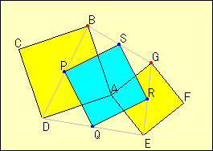

Two Squares
Problem
There are two squares ABCD and AEFG. Points P, Q, R and S are the midpoints of BD, DE, EG and GB.
What do you observe about quadrilateral PQRS? Prove what you have found.

Applet
proof